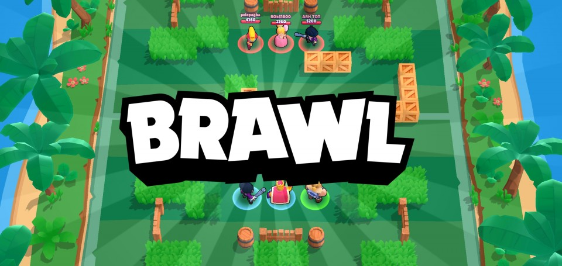
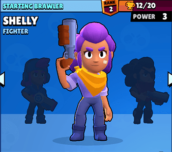
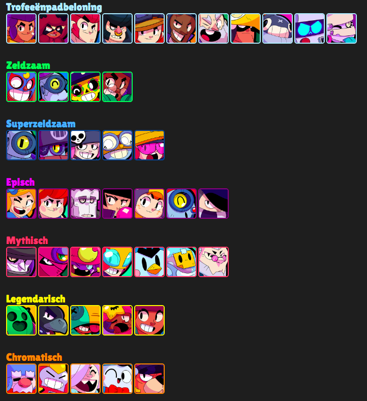
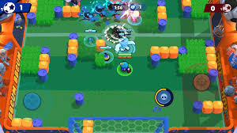
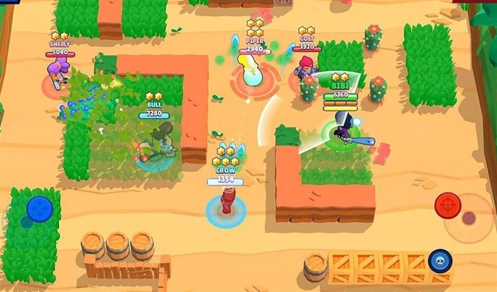

Brawlstars is een video game gemaakt door de developers van Supercell,
dit team is ook wel bekend geraakt, door de games Hay Day, Clash of
clans, Boom Beach, en Clash royaal.In het spel is het de bedoeling
knokkers te verzamelen, door middel van een punten belonings systeem.
Dit gebeurd aan de hand van tokens die je vrij speelt door je dagelijkse
opdrachten te doen.
Info

Welkom op mijn brawlstars website, deze website gaat over een van mijn
favoriete mobile games. Brawl stars is een game waar je in een team van
2 of 3 personen speelt, ook is het mogelijk om in je eentje te spelen.
Dit hangt af van de spelmodus waarvoor je kiest. Het spel is te
downloaden via the app store, van zowel apple als android. Het is een
free to play game, dus je hoeft ook niet te betalen om het te kunnen
spelen. Wel is het mogelijk, om in-app aankopen te doen, om je account
beter te maken of te customizen met skins. Op de site zal ik verder erop
ingaan, welke karakters speelbaar zijn aan de hand van de laatste
update, (elk seizoen komen er namelijk 2 of 3 nieuwe karakters bij). Ook
zal ik een uitleg geven over de speelbare maps en verschillende
spelmodussen.
Characters

Op het moment van het schrijven van de site, zijn er 44 verschillende
karakters speelbaar. De karakters worden in het spel, knokkers of wel
brawlers genoemd. Elke knokker heeft zijn eigen vaardigheid, en valt
onder de categorie: Chromatish, Legendarisch, Mytisch, Episch, Super
zeldzaam, Zeldzaam, of Normaal. In het spel begin je met een normale
knokker, dit is standaard altijd Shelly(zie bovenste plaatje) doormiddel
van een beloning systeem, kun je de overige knokkers vrij spelen.

Maps

In het spel zijn er 5 verschillende spelmodussen, waar je voor punten
kunt strijden. 3 van de mappen zijn standaard onveranderbare
spelmodussen, hierbij varieerd alleen de map waarop gespeeld word. De
spellen zijn edelstenengraai, knokbal, en showdown. de 2 overige plekken
van de 5 zijn 4 roulerende spellen. De spellen zijn belegering, premie,
gevarenzone en overval. Zodra je met je knokkers kracht level 10 bereikt
speel je een extra map vrij dit is het krachtspel duel, en wordt elke
dag voor een ander spel vervangen, hierbij kun je krachtpunten halen
warmee je skins of knokdozen in de winkel kunt halen. In het spel is er
enorm veel variatie qau maps en worden de mappen en/of spelmodussen om
de 24 uur vervangen. Ook is er de mogelijkheid binnen het spel om je
eigen speelmap te maken. En in te sturen naar de makers waardoor je in
aanmerking kunt komen om jou map speelbaar voor de gehele community te
maken.

Content
De content video behoort toe aan joran Baws dit is een populaire
brawlstars content maker. (mijn kleine zoon is overigens fan van hem.)